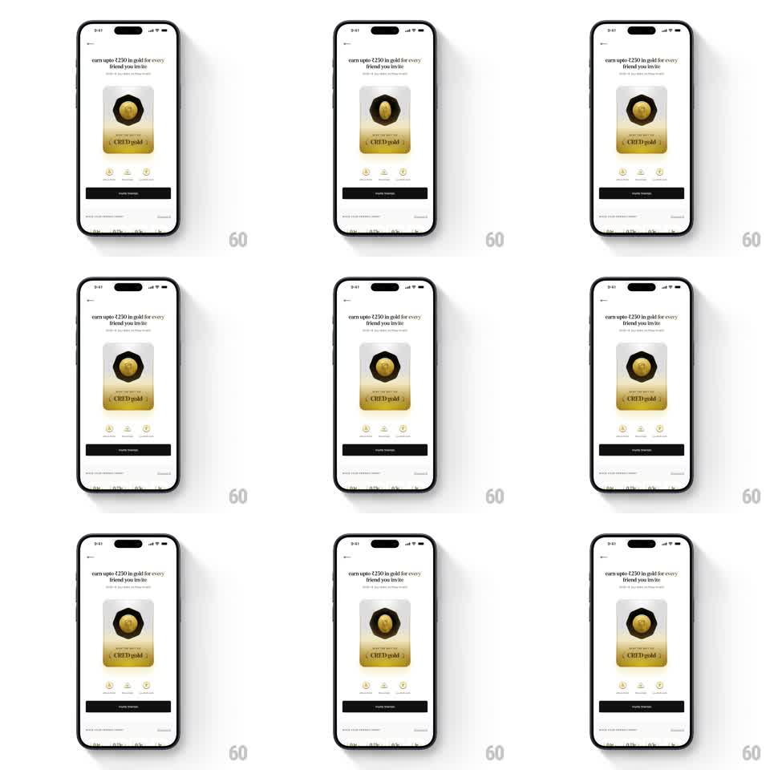

Media
Frame-by-frame

Rebuild this animation 1:1: CRED's gold invite card - a cream invite screen where the gold-gradient card with its black medallion and gold coin tilts slowly in 3D, rolling metallic reflections across the coin as it turns.

Rebuild this animation 1:1: CRED's gold invite card - a cream invite screen where the gold-gradient card with its black medallion and gold coin tilts slowly in 3D, rolling metallic reflections across the coin as it turns. ## Integration Integration: stack-agnostic spec - springs given as stiffness/damping, timed motions as duration + curve; map every value to your framework and animation library of choice. ## Scene Cream invite screen: back chevron top-left, "earn upto Rs250 in gold for every friend you invite" headline with subline, the gold card center (octagonal black medallion holding a gold coin, "CRED gold" engraved at the base), three stat icons with labels, a black "invite friends" button, and a terms line. ## Motion spec Pattern: slow 3D card tilt with rolling specular highlights. - The card rocks gently: rotateX +/- 8 degrees and rotateY +/- 12 degrees on a 5s ease-in-out loop, phase-offset so it traces a slow figure-eight. - The coin inside the medallion counter-rotates slightly (rotateY +/- 6 degrees) for parallax depth. - A specular highlight band sweeps across the card and coin as they tilt (gradient position tied to the tilt angle), and a soft drop shadow shifts opposite the tilt. - Everything else on screen is static; the card is the sole motion. ## Calibration - The gold must feel metallic: highlights are bright and tight, shadows warm and deep. - Motion is slow and premium - a showcase turntable, not a wiggle. ## Reduced motion Card holds a static three-quarter tilt with a fixed highlight. ## Don't miss - The coin's flip reads through its highlight roll, not a literal 180-degree spin. - The card's gold gradient darkens toward the base where "CRED gold" sits.